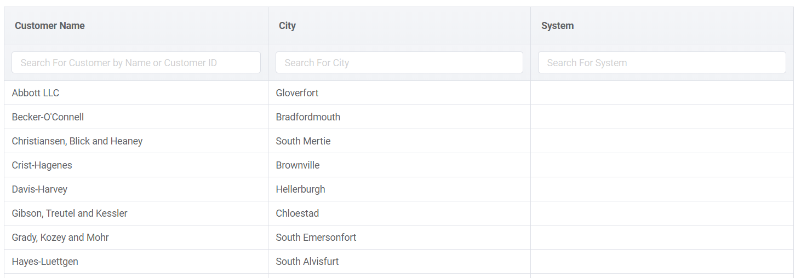
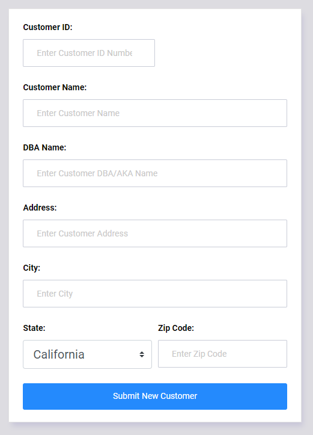
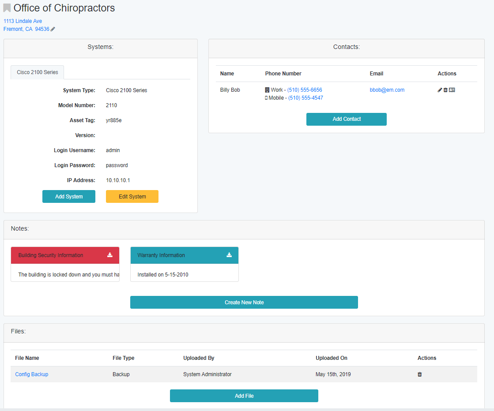

Customers¶
Customer Information allows users to share information about all of your customers in a single location. This includes information such as:
Type of Equipment Installed Onsite
Information about the equipment (i.e. login passwords, and other usefull information)
Special Notes about the cutomer or their equipment
Files such as backups of the customer equipment, site maps, and any other customer specific files.
Search Customer Page¶
The Customer Search page allows you to select a customer to view. The list can be filtered by the Customer Name, their City, or the type of equipment installed.
To create a new customer, click the “Add New Customer” link in the top right of the customer list.
New Customer Page¶
To create a new customer, the following information should be entered in the New Customer form.
Customer ID - this is an unique numerical identifier for the customer. If your company uses a separate billing software with a customer database, the Customer ID should match the billing database.
Parent Site ID (optional) - If this site is part of a larger multi-site customer, enter the Customer ID of the primary site.
Customer Name
DBA Name - If the customer operates under an alternate name or nickname, it can be entered here.
Address
City
State
Zip Code
When the customer form is submitted, you will be re-directed to the Customer Details page which will allow you to input customer information.
Customer Details¶
Once a customer is selected, the Customer Details page will appear.
The Customer Details Page is broken down into sections:
Systems¶
Any system created by the System Administrator can be assigned to the customer. When a system is assigned, customer specific information about that system will be requested. This information can include but is not limited to:
IP Address
Login Information
Version
Contacts¶
Customer contacts including their phone numbers, and email address can be entered in this section. Clicking on the phone number will activate the default dialer to call the number. Clicking on the email address will open the default Email client with the contact’s email address entered in the “to” field.
Notes¶
Text notes with additional information that cannot be included with the system can be placed in the Notes section. If a note is marked as Urgent, it will be shown with a red header and be brought to the front of the Notes list.
Files¶
Customer files can be uploaded to the Files section. This is helpful for storing backups of the customers systems, or maps of the building layout.